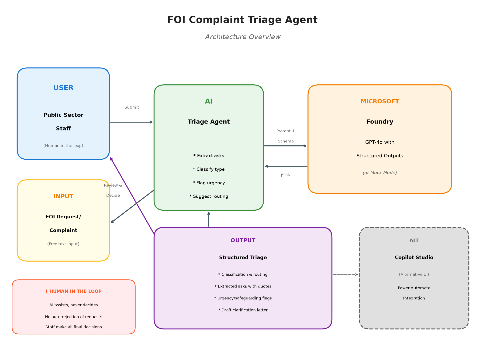

What it is
A member of staff pastes one FOI request, EIR request, subject access request, or complaint. The agent returns a structured brief: the asks, a suggested type, a suggested team, any urgency flag, a cost-limit note, and a draft letter. Autonomy is A1. A person approves every output. Sample data in the repository is synthetic.
It does not decide, send, reject, or write to a case system. It does not give legal advice.
The full note, with the statutory quotations and the evaluation table, is the README. The control for what the agent may do is the permissions manifest.
Who it is for
FOI officers, complaints managers, data protection officers, and solution architects in UK local authorities, government departments, NHS bodies, police forces, schools and universities, and arm's-length bodies.
How a case moves
- Staff paste one submission.
- The agent reads that text only.
- Microsoft Foundry, or mock mode, returns JSON.
- An FOI or complaints officer accepts or corrects the classification, the routing, the cost-limit note, and any letter.
- A safeguarding flag is reviewed by that officer or the safeguarding lead.
- Staff record the case and send any letter themselves.

Try the code
Clone rahul-bachina/foi-complaint-triage-copilot-agent, install requirements.txt, and run python src/triage_agent.py --mock --input examples/sample_request.txt. There is no Copilot Studio package to import. The build guides are in the repository.
Part of the Copilot Agent Experiments catalogue. Written by Rahul Bachina, UK Solution Architect.